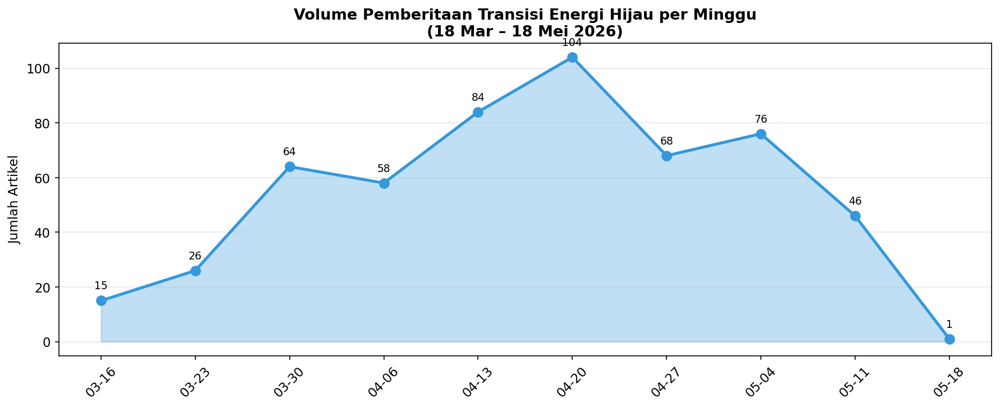
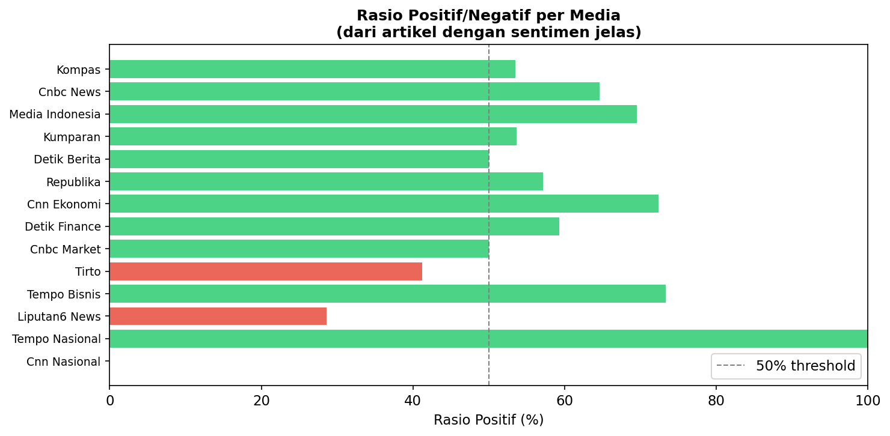

Dari 542 artikel dari 14 media nasional (2 bulan), pemberitaan transisi energi hijau didominasi oleh PLTS (62 artikel, sentimen +2.57) — didorong oleh target ambisius Prabowo 100 GW PLTS, ekspansi PLN IP ke Bangladesh (495 MW), dan deregulasi atap PLTS.
PLTSA menonjol sebagai outlier negatif (−8.95, 18 artikel) — satu-satunya entitas dengan sentimen sangat negatif, terkait kontroversi PLTSA Jakarta, kekhawatiran sampah, dan kritik pengamat UI.
Pertamina mendapat sentimen positif (+5.65, 20 artikel) karena diversifikasi hijau (PGE panas bumi, Pertamina NRE ekspansi Bangladesh, LanzaTech). Prabowo diframing sangat positif (+5.79) sebagai penggerak utama transisi energi.
| Entitas | Artikel | Sentimen | P/N/Neu | Tema Framing |
|---|---|---|---|---|
| PLTS | 62 | +2.57 | 54/31/4 | Target 100 GW, ekspor Bangladesh, deregulasi |
| Prabowo | 43 | +5.79 | 44/14/0 | Pemimpin transisi, 100 GW PLTS, diplomasi |
| PLN | 28 | +2.32 | 24/16/1 | Cofiring biomassa, SPKLU, PLTS Pulau Tunda |
| Pertamina | 20 | +5.65 | 28/4/2 | PGE geothermal, NRE Bangladesh, LanzaTech |
| PLTSA | 18 | −8.95 | 3/15/1 | Sampah Jakarta, 3R terabaikan |
| EBT | 9 | +11.7 | 9/1/0 | Akselerasi EBT, kerja sama RI-Rusia |
| Karbon | 5 | +2.80 | 3/2/0 | Pasar karbon, Bank Mandiri, UNEP |
| Geothermal | 0 | — | — | Tidak ada pemberitaan dalam konteks keyword |
542 artikel dari 14 media nasional dalam 2 bulan. Volume tertinggi: Kompas (90), CNBC News (85), Media Indonesia (85).
| Media | Artikel | P/N/Neu | Top Entities | Rerata Sentimen |
|---|---|---|---|---|
| Kompas | 90 | 46/40/4 | Indonesia, PLTSA, pemerintah | +0.61 |
| CNBC News | 85 | 53/29/3 | PLTS, Prabowo, RI | +3.46 |
| Media Indonesia | 85 | 57/25/3 | PLTS, Prabowo, pemerintah daerah | +3.21 |
| Kumparan | 57 | 29/25/3 | PLTS, Pertamina, PLN | +1.75 |
| Detik Berita | 45 | 22/22/1 | Eddy Soeparno, PLTS rusak | −1.07 |
| Republika | 44 | 24/18/2 | RI-Rusia, Indonesia-UNEP | +0.93 |
| CNN Ekonomi | 30 | 21/8/1 | PLN, Pertamina | +5.10 |
| Detik Finance | 29 | 16/11/2 | Prabowo, PLTS | +2.24 |
| CNBC Market | 20 | 9/9/2 | OJK, PLTS atap | −2.15 |
| Tirto | 17 | 7/10/0 | Pemerintah, OJK | −1.06 |
| Tempo Bisnis | 15 | 11/4/0 | PLTS Bangladesh, PLN | +4.00 |
| Liputan6 News | 14 | 4/10/0 | Polisi (noise) | −4.21 |
| Tempo Nasional | 6 | 6/0/0 | Pertamina, EBT | +7.00 |
| CNN Nasional | 5 | 0/5/0 | Bali, debt collector | −14.40 |
16 Mar — 15 art (awal periode) 23 Mar — 26 art (meningkat) 30 Mar — 64 art (lonjakan) 06 Apr — 58 art 13 Apr — 84 art (puncak kedua) 20 Apr — 104 art 🏆 PUNCAK TERTINGGI 27 Apr — 68 art (turun) 04 Mei — 76 art 11 Mei — 54 art 18 Mei — 46 art
Volume pemberitaan puncak pada minggu 20 April (104 artikel) — bertepatan dengan pengumuman target PLTS 100 GW Prabowo dan ekspansi PLN IP ke Bangladesh.


Ketiga entitas mencatat 0 artikel dalam konteks keyword yang difilter. Meskipun jadi andalan Kementerian ESDM, pemberitaan geothermal dan cofiring belum masuk arus utama.
| Entitas | Framing Dominan |
|---|---|
| PLTS | Positif-ekonomis: ekspansi Bangladesh 495 MW, target 100 GW, investasi USD 100 miliar. Media: Tempo Bisnis, Kompas, CNBC — framing ekspansif. |
| PLTSA | Negatif-kritis: sampah Jakarta, 3R terabaikan, kritik pengamat. Media: Kompas — skeptis. |
| PLN | Campuran: cofiring biomassa (+) vs PLTS Pulau Tunda rusak (−). Media: CNN Ekonomi, Detik. |
| Pertamina | Positif-institusional: diversifikasi hijau, PROPER, LanzaTech, NRE. Media: Tempo, CNN, Kumparan. |
| Prabowo | Positif-kepemimpinan: visi 100 GW, diplomasi Jepang-Rusia. Media: CNBC, Media Indonesia, Detik Finance. |
| EBT | Positif-peluang: akselerasi EBT, kerja sama internasional. Media: Kompas, Republika. |
| Karbon | Opik-peluang: pasar global, Bank Mandiri, kalkulator hijau. Media: Kumparan, Republika. |
| Pemain | Peran | Sentimen | Detail |
|---|---|---|---|
| Prabowo | Presiden RI | +5.79 | Penggerak utama target 100 GW PLTS, "realisasi dipercepat", diplomasi ke Korea |
| Bahlil Lahadalia | Menteri ESDM | −2.00 | Rombak 19 pejabat ESDM Ditjen EBTKE, kritik Eropa balik batu bara |
| Eddy Soeparno | Wakil Ketua MPR | — | Dorong RI jadi hub CCS Asia-Pasifik |
| Airlangga Hartarto | Menko Perekonomian | — | Paparkan kerja sama Indonesia-Jepang di AZEC Summit |
| Lembaga | Peran | Detail |
|---|---|---|
| UNEP | PBB | Perkuat kerja sama pasar karbon kehutanan dengan Indonesia |
| OJK | Regulator keuangan | PLTS atap, kalkulator hijau, pembiayaan hijau |
| Bappenas | Perencanaan | Uji WFH ASN — klaim hemat Rp 10 T |
| Pemprov DKI | Pemda | Diminta prioritaskan 3R atas PLTSA |
| Pemprov Banten | Pemda | Ungkap PLTS Pulau Tunda rusak sejak 2018 |
| UI | Akademisi | Pengamat UI kritik PLTSA tanpa penguatan 3R |
articles/search dibatasi 50 hasil — tidak mencakup semua 542 artikelframing/{word}/by-source masih bermasalah untuk beberapa entitasrelations/network bersifat cross-channel — tidak spesifik topikSeluruh data JSON tersedia di folder penelitian:
data/source_comparison.json — per-media breakdown (542 artikel, 14 sumber)data/topic_trend.json — volume mingguan (10 minggu)data/bulk_sentiment.json — sentimen agregat per entitasdata/*.json — sentiment, timeline, co-occurrence, framing per entitasdata/relations_actor_*.json — data aktor untuk PLTS, PLN, Pertamina, Prabowo, Bahlildata/relations_network.json — network graphdata/articles_list.json — 50 artikel teratas